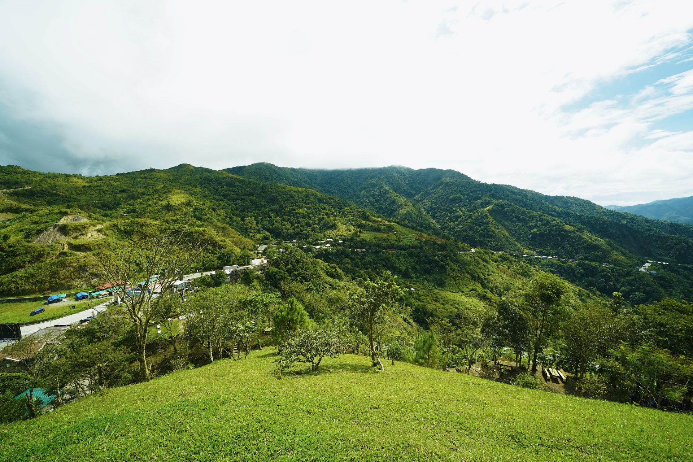
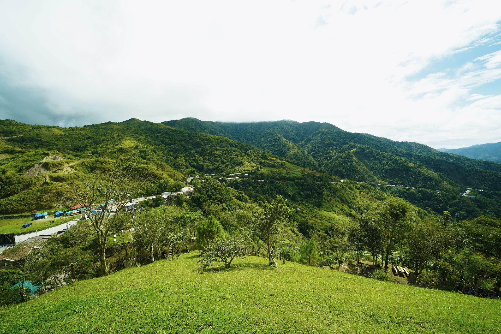

2__(ph)Thalo green
A defining visual element of tropikalye is this distinctive cool green hue, named Thalo green by the largest local paint manufacturer BOYSEN (Pacific Paint) Philippines. This color holds particular significance for many Filipinos, including the father of this website’s author, who often paint their household walls in this shade as a way to counteract the country’s intense heat. “Malamig sa mata” or cold to the eyes. While there may be no scientific basis to support the idea that this color cools interiors, its popularity persists. The cool green tone also creates visual harmony between interior spaces and the lush Philippine foliage visible through windows, seamlessly blending indoors with the natural outdoors.
This interplay of color and nature speaks to a deeper, almost intuitive connection between the built environment and the tropical landscape, underscoring how aesthetics in everyday life often respond to practical needs while maintaining a seamless dialogue with the surrounding natural world. In a hyperglobalized world, Thalo is green is an authentic local visual expression that we can say is truly Filipino.
As contrast, homes found in gated villages in the capital Manila allude to minimalism- white, rigid. These are neighborhoods that are more in touch with imported media and visual trends.
1_Application
There are numerous examples of the tropikalye coming into play. Here are two applications to showcase the variety of ways tropikalye been present in contemporary Philippines:
Upcycled Mountain Dew Bottles beautiful improvisation of single-use plastic in the form of sculpting acid green, Mountain Dew bottles, to either the form of palm trees, Christmas trees. Also popularly used to create eye-catching typography signages
Chel Diokno senatorial campaign Chel Diokno is a prominent Filipino lawyer and public figure known for his work in promoting justice and defending human rights in the Philippines. His visual identity for senatorial candidacy in the previous 2022 national elections used a mint green color chosen to represent ‘something fresh’ garnered significant support, particularly among younger voters.
Seattle craftsman-style home in Thalo green - a marker for Filipino household, the Christmas wreath still up on the front door in July is added bonus.
 
